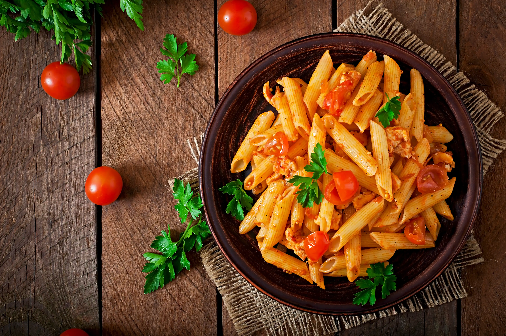

Welcome to Chef Claudio Cisternino's Kitchen!
Explore the authentic flavors of Puglia with tailor-made culinary experiences. We use fresh, local ingredients to bring the Pugliese tradition directly to your table, making every meal a memorable event.
Chef Claudio offers you an authentic Pugliese culinary experience, where tradition, culture, and local flavors come together to celebrate the cuisine of our beloved region. Born and raised in Puglia, Chef Claudio has inherited a passion for fresh, natural food and eagerly shares his knowledge with guests.
Perfect for those on vacation or looking to relax, Chef Claudio offers a personal chef service for private dinners or special events. Additionally, you can join hands-on cooking classes, learning to prepare traditional dishes that you’ll be able to recreate for a lifetime.
About Puglia Flavors
The mission of Puglia Flavors is to offer an authentic Pugliese gastronomic experience directly to your home. We are dedicated to bringing the unique flavors and culinary traditions of Puglia to visitors from around the world. With a team of passionate and skilled chefs, we create dishes that tell the story and culture of our land, turning every meal into an unforgettable experience.
Puglia Flavors is committed to showcasing and celebrating the richness of Pugliese cuisine through personalized in-home chef services. Our mission is to ensure that every dish not only meets but exceeds expectations, offering an authentic and refined culinary journey. Through our expertise and dedication, we transform every dinner into an opportunity to experience the true essence of Pugliese gastronomic tradition.
About Chef Claudio Cisternino
Chef Claudio Cisternino, an expert in Pugliese cuisine, founded Puglia Flavors to bring the authenticity of Puglia's flavors directly to the homes of food lovers.
With years of experience in gastronomy, Chef Claudio is dedicated to providing an exclusive private chef service, crafting dishes that reflect the rich culinary traditions of the region.
His project stems from a desire to share his passion for Pugliese cuisine with the world, offering personalized culinary experiences that turn every meal into a journey of taste.